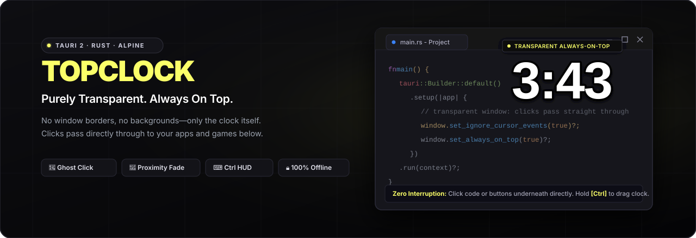

Get the app
Install TopClock from Microsoft Store and launch it from the Start menu.
A transparent desktop clock that stays above your work and lets every click pass through. Hold an interaction key when you want to move or control it.
Windows desktop app · Local settings · No account needed
Keep time above windows while you work, play, or watch.
Use the app underneath without moving the clock first.
Hold Ctrl by default to drag, click, or open the clock menu.
TopClock starts with a transparent clock and settings you can change while it runs.
Install TopClock from Microsoft Store and launch it from the Start menu.
Hold Ctrl and drag the clock to the part of the screen you prefer.
Click the tray icon to change the face, add-ons, shortcuts, and displays.

Add a local date, another region's time, a numeric timer, or progress bars. Place them above or below the clock and adjust their size and order.
Explore add-onsDownload TopClock for Windows from Microsoft Store.
Start with the tray icon. The clock itself passes input through until you hold the interaction modifier.
Install from Microsoft Store, then launch TopClock from the Start menu. The clock appears on connected displays by default. Left-click the TopClock icon in the Windows notification area to open Settings; right-click it for Quit.
The default interaction modifier is Ctrl. You can change it to Alt or Shift in Settings → Shortcuts. The controls below use Ctrl as the default example.
Move the clock on that display.
Switch between 12-hour and 24-hour time.
Open the clock menu for Settings, Quit, and available add-on actions.
Release the modifier and the clock returns to click-through behavior. Moving the pointer near it also fades it to reduce visual obstruction.
In Clock, adjust font, color, outline, size, time layout, 12/24-hour display, and animations. Changes preview on the desktop clock. Shortcuts changes the interaction modifier and optional system-wide actions. General contains language, display switches, sign-in launch, settings files, and update controls.
TopClock shows the clock on all connected displays by default. In Settings → General, switch individual displays on or off. Each visible display keeps its own dragged position; appearance and add-ons are shared.
If a clock is out of reach, open Settings → Clock and select Reset positions. This centers clocks currently visible on connected displays and saves those positions. A display switched off in General keeps its saved position.
Microsoft Store installations can check for an available Store update in Settings → General. Store updates are delivered through Microsoft Store. Portable copies use GitHub Releases reminders and are updated manually.
See version notesFollow the controls in Settings → Add-ons to add, configure, and place each built-in add-on.
The numbered map follows the current Add-ons screen. It shows the controls to use; example values are illustrative.
The Text size slider and Remove button are inside each card's Edit area. A focused ⠿ handle also accepts the Up and Down arrow keys for reordering.
The switch on the Date card hides it while keeping your format choice. To delete it, open Edit and click Remove.
Region clocks use the main Clock tab's time layout, 12/24-hour choice, font, colors, and number animation. You can keep up to 12 Region clocks.
Timer Start/Pause and Reset shortcuts can be enabled in Settings → Shortcuts. They are off by default.
Choose Start date and End date. The end must be later than the start. A new Date bar starts with today and tomorrow.
In TIME RANGES, click the time label (for example, 09:00–17:00) in the left column. Set Start time and End time, then click Save time. Click weekday cells in that row to choose the days; Every day restores all seven. Click Add time range for another row, up to eight. A range must end the same day it starts. Overlapping times are allowed only when their weekdays do not overlap. Hide after all ranges finish hides the bars about a minute after the last range on a scheduled day.
Set Countdown minutes before the first Start. Use the card's Start/Pause and Reset, or modifier-click the desktop bar to start or pause. Minutes lock after the first Start until the countdown finishes or you reset it. Modifier + right-click the clock opens the Progress menu with Start/Pause, Reset, and Set presets. Click Details on the Progress catalog or card to edit the shared presets. The preset choices start at 10, 30, and 60 minutes; the countdown itself starts at five minutes. Choosing a preset starts that countdown immediately and may ask before replacing progress.
Drag each Progress card by its ⠿ handle to set order and side of the main clock. The Add-ons dashboard supports up to 16 cards total.
A concise record of the repository's tagged versions. For complete release files and downloads, visit GitHub Releases.
GitHub ReleasesVersion notes summarize changes present at each tag, based on the repository history.
Microsoft Store access was added to the project README. The preceding work on this tag also reorganized add-on code, improved Settings preview reliability, and added a long-run verification script.
View release ↗Improved the Progress daily time-range editor and weekday scheduling. Also corrected the clock menu and strengthened always-on-top recovery.
View release ↗Redesigned the Add-ons page and introduced Progress bars for dates, daily time ranges, and independent countdowns. Added language choices and Microsoft Store package/update support.
View release ↗Added multiple-display clocks with independent saved positions, a Reset positions button, and a Settings files shortcut. Split frontend and backend responsibilities for maintainability.
View release ↗Introduced built-in add-ons and the Shortcuts page, improved the clock's context menu and click-through behavior, and updated portable build packaging.
View release ↗Established the transparent clock and Settings window with clock styling and animations. Added the lightweight GitHub release reminder for direct downloads.
View release ↗